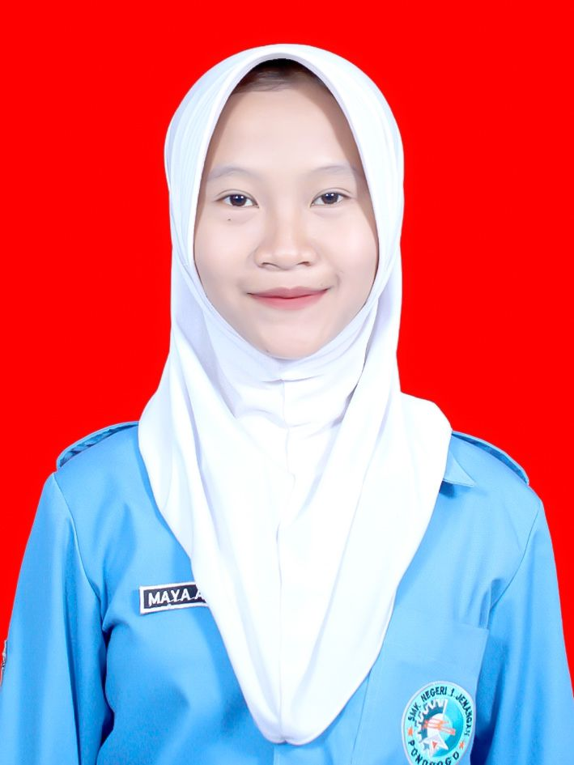

Siswa SMK JURUSAN RPL
Saya merupakan siswa SMK jurusan Rekayasa Perangkat Lunak (RPL) yang memiliki ketertarikan dan antusiasme tinggi terhadap dunia pengembangan perangkat lunak serta teknologi informasi,Seiring dengan pembelajaran di sekolah,
saya terus mengembangkan kemampuan teknis dan logika pemrograman saya melalui berbagai proyek kecil maupun tugas
praktik. Untuk memperdalam pengalaman dan wawasan di dunia kerja, saya bermaksud melaksanakan
Praktik Kerja Lapangan (PKL) di CV Edusupe yang berlokasi di Madiun, Jawa Timur.
Saya percaya bahwa kesempatan PKL di CV Edusupe akan menjadi pengalaman berharga bagi saya untuk belajar
langsung dari lingkungan kerja profesional, mengembangkan keterampilan teknis, serta memahami bagaimana dunia
industri teknologi beroperasi secara nyata. Besar harapan saya untuk bisa bergabung dan belajar bersama tim CV
Edusupe agar dapat menjadi bekal kuat
dalam meniti karier di bidang teknologi informasi di masa depan.
komunikasi yang baik, dapat bekerja dengan cepat dan efisien, serta selalu
bertanggung jawab dalam segala tugas.
Tempat, Tanggal Lahir: Ponorogo, 24 Maret 2008
Alamat: Desa Purwosari, Kecamatan Babadan, Kabupaten Ponorogo
Email: mayaas8550@gmail.com
Bahasa Pemrograman: HTML, CSS, Java, PHP, Python
Database: MySQL, PostgreSQL
Proyek Kecil: